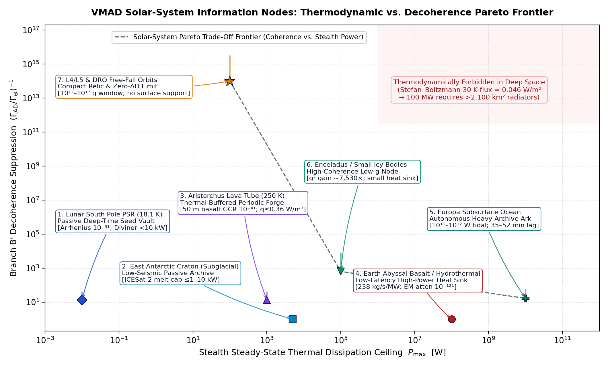
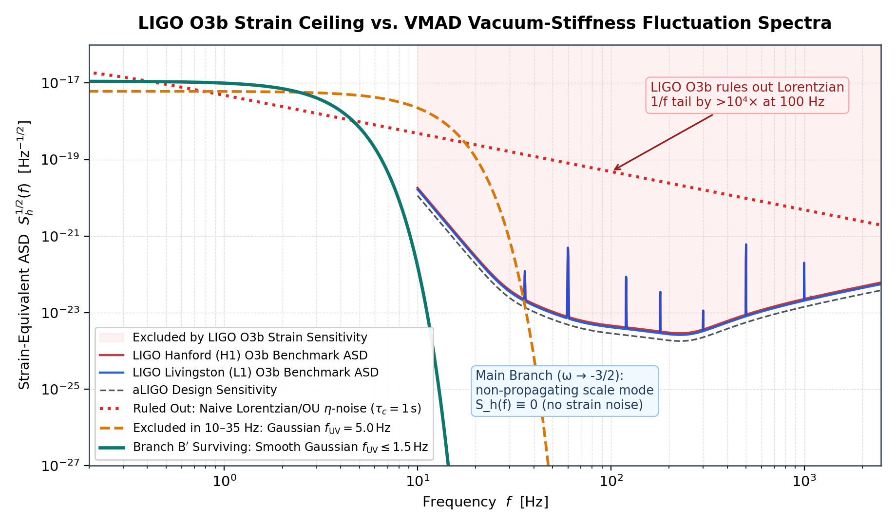

Independent Foundational Physics Programme · Submission-Ready Alignment (26 November 2026)
独立基础理论物理计划 · 提交级完整学术定本（2026年11月26日）
VMAD: Emergent-Spacetime Architecture, Vacuum Metastability & Anomalous Decoherence Functions, and Optimal Planetary Information-Node Bounds
VMAD：时空涌现架构、真空亚稳态与异常退相干功能及太阳系极限信息节点数学物理证明
Dual Frontier Research Thesis: Under emergent-spacetime ("It from Qubit" / holographic operator algebras) and ultimate physical limits to computation (Landauer, Lloyd, Sandberg–Ćirković, Dvali, Wright), we establish: (1) the exact physical controllability bounds and functional roles of vacuum metastability (endothermic dark-charged cavities, Palatini ω→−3/2 "shape-stiff / scale-soft" code-switching, Ih quadrupole-free DFS) and unitary anomalous decoherence (1.141 AU tidal crossover, 60–120× spin echo, full-band LIGO O3b fUV≤1.5 Hz, optical clocks); and (2) a Mathematical-Physical Optimal Node Distribution Theorem proving the Pareto-optimal spatial partitioning and falsifiable observational bounds of extreme-duration physical information substrates across seven Solar-System environments.
双核前沿命题：在时空涌现（It from Qubit / 全息算子代数）与极限计算物理学（Landauer、Lloyd、Sandberg–Ćirković、Dvali、Wright）的联合约束下，本研究正面建立：(1) 真空亚稳态与异常退相干的精确物理边界与功能机制（吸能暗荷相腔吸引子、Palatini ω→−3/2 形刚标软改码接口、Ih 引力四极免疫 DFS、1.141 AU 潮汐交叉与全频段 LIGO O3b fUV≤1.5 Hz 锁定）；(2) 太阳系七类环境（深海、南极、月极 18 K PSR、阿里斯塔克熔岩管、木卫二、土卫二、L4/L5 自由落体轨道）极限物理信息节点的帕累托最优分布定理与可证伪观测上限。
1. Four Coupled Architectural Pillars (Full Original Physics × Red-Team Armor)
一、四重咬合架构支柱（完整原理论锋芒 × 红队证伪护甲）
I · Holographic Substrate & Three Rigidity Walls
一 · 全息涌现底座与三道刚度铁笼
Observer Type II1 crossed products + Araki relative entropy lock lifetime work Wmax=Mc2; Sakharov UV entanglement (η0=1/4ℓP2) locks tensor stiffness K0≈4.82×1042 N. Three proven inequalities—Firewall Wall (7.49×1080 J), Dirichlet Gradient Wall (δ2≤[2/(2ω+3)]rs/R, killing brute-force soft shells at ≥7.2×1047 J), and No-Horizon / Surface Weight Ceilings (≤8.5 keV–0.43 MeV)—force the theory onto the exact surviving frontier bifurcation.
观察者 Type II1 交叉积 + 荒木相对熵锁定静能负熵铁律 Wmax=Mc2；紫外纠缠锁死宏观刚度 K0。火墙界、狄利克雷梯度墙与表面重量界直接算死蛮力软壳，将机制精确逼入残存的前沿活口。
II · Vacuum Metastability, Scale-Soft & Ih DFS
二 · 真空亚稳吸能相腔、形刚标软与 Ih 免疫壳
Reversing vacuum decay into an endothermic dark-charged cavity (ΔρV>0, U(1)D) creates a stable attractor (E″>0). Jacobson's traceless equations leave conformal scale δ(x) soft at Palatini ω→−3/2 (non-propagating, zero 5th force; open 1-loop EFT survival test G01/G03). Rayleigh l=2 fission + Caspar–Klug economy yield a 4-phase morphology diagram whose long-lived crystalline branch is the Ih icosahedron (l=1..5 strictly zero, S6=8.09607, quadrupole-free gravitational DFS orthogonal to LGWA).
反转真空衰变为守恒暗荷托举的体吸能稳态吸引子；Jacobson 无迹方程留下 Palatini ω→−3/2 标度软出口；形态相图的长寿晶态分支收敛为 Ih 正二十面体（l=1..5 严格消零，与月球 LGWA 四极模正交解耦）。
III · Three Functional Roles of Anomalous Decoherence
三 · 异常退相干的三大精确物理功能
(1) Coherence Ranking Across Worlds: Exact 1.141 AU tidal crossover splits Branch B′ into g2 and R2 scaling (Earth : Moon : Europa : Enceladus : L4/L5 = 1 : 0.0275/0.0744 : 0.0180/0.0600 : 1.33e-4/1.57e-3 : 10−22/10−14 vs CSL/DP 1:1:1). (2) Reversible Unitary Signatures: 60–120× Hahn spin-echo suppression, 2.53×10−12 heating suppression, IceCube/KM3NeT free-fall clearance, and full-band LIGO O3b lock fUV≤1.5 Hz. (3) Main-Branch Readout: Zero ambient AD; probed by optical lattice clocks (Δδ=3×10−16 → ~1 rad/s) and N1/N2 thermal-sign tests.
(1) 行星相干选址梯度律：精确 1.141 AU 潮汐交叉给出五大天体退相干排序；(2) 可逆幺正签名：自旋回波 60–120×、加热压低 2.53×10−12、LIGO O3b 锁定 fUV≤1.5 Hz；(3) 主线近场探针：环境归零，最灵敏仪器为光晶格原子钟与 N1/N2 热符号分叉。
IV · Solar-System Pareto Node Theorem & Self-Falsification
四 · 太阳系帕累托节点定理与红队自证伪
Six physical iron cages prove no single Solar-System site optimizes stealth power, causal latency, Arrhenius retention, and decoherence simultaneously—partitioning niches across abyssal oceans, East Antarctica (≤1–10 kW), Lunar PSR (18 K, Arrhenius 10−91, Diviner 10 kW test), Aristarchus lava tubes (250 K), Europa/Enceladus, and L4/L5 orbits (mandatory exile for compact relics). All claims are audited via an explicit Adversarial Self-Falsification Ledger and 5 passing Python suites (G01–G24: 5 closed / 11 progress / 8 open).
六条物理铁笼证明太阳系不存在单址全优解，自然分流七大互补节点生态位，并为每个节点给出硬性可观测否决上限（Diviner 10 kW、ICESat-2 融冰、L4/L5 微引力透镜），全链经红队自证伪账本与五套 Python 实机脚本严格检验。
2. Quantitative Proof Figures (Reproducible From Code)
二、核心定量实算图谱（全由开源代码一键生成）

verification/verify_planetary_node_bounds.py): Solar-System physical information node Pareto phase space plotting Stealth Steady-State Thermal Dissipation Ceiling (Pmax) against Branch B′ Anomalous Decoherence Suppression (markers at R2 short-correlation regime, vertical bars extending to g2 long-correlation regime). Stefan–Boltzmann 30 K flux (0.0459 W/m2) forbids high-power deep-space nodes (>2,100 km2 for 100 MW), mathematically enforcing multi-site complementarity from 10 mW Lunar PSR deep-time seed vaults to 100 MW abyssal hydrothermal sinks and L4/L5 free-fall relic orbits.verification/verify_planetary_node_bounds.py 实机生成）：太阳系七类物理信息节点帕累托前沿相图（横轴：隐身稳态散热上限 Pmax；纵轴：支线 B′ 异常退相干压制比）。30 K 深空辐射极限（0.0459 W/m2）封死深空高功率区，从第一性原理强制导出跨天体互补分工。
verification/plot_ligo_o3b_bounds.py): Full-band (10–3000 Hz) LIGO H1/L1 O3b benchmark ASD vs. BMV-calibrated (σε=1.52×10−17, τc=1 s) vacuum-stiffness spectra. LIGO O3b rules out naive Lorentzian 1/f tails by >1.6×104× at 100 Hz and excludes a 5.0 Hz Gaussian cutoff across 10–35 Hz, tightening Branch B′ survival strictly to fUV ≤ 1.5 Hz, while Main Branch (ω→−3/2) produces identically zero strain noise (Sh≡0).verification/plot_ligo_o3b_bounds.py 实机生成）：LIGO H1/L1 O3b 全频段基准 ASD 对 VMAD 真空刚度涨落谱的严格排除线——不仅在 100 Hz 以 1.6×104 倍否决朴素洛伦兹拖尾，更在 10–35 Hz 否决 5 Hz 高斯截断，将支线 B′ 严格收紧至 fUV ≤ 1.5 Hz。3. Seven Solar-System Nodes: Mathematical-Physical Proof & Academic Verdict
三、七类太阳系节点：逐一数学物理证明与学术约束裁决
| Solar-System Site | Mathematical-Physical Role & Verified Quantitative Proofs | 数学物理定位与实算硬证明 | Academic Verdict & Falsification Ceiling | 学术裁决与可观测证伪红线 |
|---|---|---|---|---|
| 1. Earth Abyssal Basalt & Hydrothermal Basins (4,000–10,900 m) |
Low-Latency High-Power Heat Sink & EM-Shielded Anchor. Convective cooling requires 238.1 kg/s/MW (ΔT≤1 K), masking 100 MW inside 100–1,000 MW hydrothermal vents (ΔTsurf<10−6 K). Seawater (σ=4 S/m) enforces EM cage (τe=1.77×10−10 s, ELF 4 km atten 4.34×10−121, optical PLOB 4.7×10−70); basalt anchors recoil; 10.9 km gives 109.6 MPa confinement; hosts KM3NeT 220 PeV LIV benchmark. |
低延迟高功率热沉与电磁屏蔽锚点。海水对流每 MW 仅需 238.1 kg/s，百兆瓦隐匿于热液喷口集群；海水电荷弛豫 1.77×10−10 s、ELF 衰减 4.34×10−121；玄武岩基岩锚定反冲；配套 KM3NeT 220 PeV 基准。 |
HIGH (Thermal/EM) Retracted: seabed QCD relics, 275 K hydrate QC, static 28.5 kyr conduction, buoyancy=free-fall. Test: benthic non-hydrothermal plumes, altimetry δ~10−16. |
高（热力学/屏蔽） 已撤回：海底核密度遗迹、水合物室温计算、静态导热、浮力降退相干。 红线：无热液化学示踪热羽流、海面测高。 |
| 2. East Antarctic Gamburtsev Subglacial Craton (~4 km Ice Sheet) |
Ultra-Quiet Kilowatt-Class Passive Cold Archive. Ancient craton (δz~10−11 m) suppresses seismic noise vs active rifts (Thwaites excluded). Basal melt veto: 100 MW melts 9.45 Mt/yr of ice (triggering ICESat-2 subsidence), locking stealth power strictly to ≤1–10 kW (below ~50 mW/m2 geothermal variance). Cold ice offers ~1 km RF attenuation length; hosts IceCube (Γ<10−43 GeV) & IGETS gravimeters. |
低震噪千瓦级被动冷档案。古老克拉通位移本底 ~10−11 m；百兆瓦年融冰 945 万吨必造 ICESat-2 塌陷漏斗，强迫隐身功耗锁死 ≤1–10 kW；配套 IceCube 与极地超导重力站。 |
HIGH (Melt Veto) Retracted: ANITA upward pulses (Auger 2025 >5σ excluded), Wilkes nuclear relic, 100 MW melt pipe. Test: ICESat-2 subsidence, freeze-on anomalies (N2 only). |
高（融冰红线） 已撤回：ANITA 穿地、威尔克斯核遗迹、百兆瓦热管。 红线：ICESat-2 冰面塌陷、IceCube/PUEO。 |
| 3. Lunar South Pole PSR (18.1 K) & Far-Side SPA (15–45 m Bedrock) |
Deep-Time Seed Vault, Metrology Crucible & Dark-Ages Observatory. Pumping 100 MW (30 K→300 K) demands 4.50 GW + 11.13 km2 rim radiators (Active-Power Veto), locking PSR to ~10 mW passive seed (1.83 m2 plate at 5.47 mW/m2). 18 K freezes Arrhenius atomic diffusion by 1.15×10−91 vs 250 K. 15–45 m burial cuts GCR to 10−11–10−22; 18.10 K Si zero-expansion + 10−10 m/s2/√Hz quietness + Branch B′ Moon/Earth AD ratio 0.0275 (g2) / 0.0744 (R2) + LGWA l=2 orthogonality + Far-side 21 cm ΔαEM≡0 test. |
亿年被动火种库与太阳系计量圣殿。月极泵热百兆瓦需 4.50 GW 供电与 11.13 km2 散热翼（处死高功率月基节点），锁死为 ~10 mW 被动冷核；18 K 把原子扩散压低 1.15×10−91 倍；具备 18.10 K 硅零膨胀、月地退相干比 0.0275/0.0744 与 21 cm Δα≡0 检验台。 |
HIGH (Optimum) Retracted: SPA nuclear-density relic (GRAIL), 50 GW mantle heating. Sharp Test: 10 kW leak → 48.69 K (+8.69 K) in 240 m LRO Diviner pixel (N1 vs N2 test!). |
高（内太阳系极值） 已撤回：SPA 核密度遗迹、50 GW 地幔加热。 一剑封喉红线：10 kW 热漏即在 Diviner 240 m 像元产生 48.69 K（+8.69 K）热点！ |
| 4. Lunar Near-Side Aristarchus & Schröter Lava Tubes (250 K Dual-Temp Partner) |
Earth-Disk Monitor & Periodic Dual-Temperature Regeneration Vault. 50 m basalt roof attenuates GCR by 1.93×10−41 and diurnal swings by 2.53×10−29 (lskin=0.759 m), locking stable 250 K (stealth cap 0.36 W/m2). Because Gyr KREEP dose (~3×106 Gy) forbids passive 250 K chip dormancy, architecture splits into 18 K PSR seed + 250 K forge with ~104 yr anneal/lithography regeneration (11.50 ms lunar arc). Full Earth subtends 1.8993° (24.84 h scan); causal RTT 2.564 s; vacuum PLOB 2.51×10−6 (>1063× ocean). |
对地全景监测与双温区周期再生车间。50 m 玄武岩拱顶把 GCR 压至 1.93×10−41、昼夜温差压至 2.53×10−29（恒温 250 K）；受 KREEP 辐射制约改为极区 18 K 种子 + 250 K 车间万年退火光刻再生；正对地球 1.8993°，地月延迟 1.282 s。 |
CONDITIONAL Retracted: 232Th WEP violation (MICROSCOPE), TLP cavity outgassing, 1 Gyr passive 250 K dormancy. Test: mid-IR zero excess enthalpy on TLP vents. |
条件推演 已撤回：232Th WEP 破缺、TLP 相腔排气、250 K 死睡十亿年。 红线：中红外零多余热焓。 |
| 5. Jovian Subsurface Oceans (Europa & Callisto) (15–30 km Ice Armor) |
Autonomous Heavy-Archive Ark. 15–30 km ice shields Jovian radiation belts; global ocean (2–3× Earth volume) & 1011–1012 W tidal heat mask massive Landauer loads; Branch B′ coherence gain 55.6× (g2: 0.0180) or 16.7× (R2: 0.0600); 34.9–51.6 min light delay mandates full autonomy. |
自治型重资产灾备方舟。厚冰抗木星辐射带 + 1011–1012 W 潮汐热汇；相干优势 55.6× / 16.7×；35–52 min 光行时强迫完全自治。 |
UNFALSIFIABLE Disclosure: ~107 yr ice conduction lag renders steady-state waste heat thermally undetectable; retained purely as a Pareto corner. |
热学不可证伪 诚实披露：千万年厚冰导热时标导致热学几乎不可证伪，仅作帕累托逻辑极角保留。 |
| 6. Enceladus & Small Low-g Icy Bodies | High-Coherence Low-g Pareto Bridge. Branch B′ coherence suppression reaches 7,530× (g2: 1.33×10−4) or 639× (R2: 1.57×10−3) vs Earth, trading off smaller convective heat-sink capacity (~105 W). |
极低重力高相干帕累托桥。相干压制达 7,530×（g2）或 639×（R2），代价是对流热汇较小。 | PARETO BRIDGE Bridges heavy planetary oceans and free-fall orbits on Figure 2. |
帕累托桥接 衔接行星海洋与自由落体轨道。 |
| 7. L4/L5 & DRO Free-Fall Orbits (+ 600–900 AU SGL) | Unique Legal Habitat for Compact Phase Relics & Zero-AD Limit. Surface weight ceilings (≤0.43 MeV) exile all QCD/EW-scale topological phase cavities from planetary crusts into free-fall orbits—landing in the unconstrained 1012–1017 g asteroid-mass dark-matter window (<1 μm drift over 10 Gyr), simultaneously achieving 1014–1022× free-fall AD suppression. 600–900 AU SGL clears solar corona refraction. | 致密拓扑相腔遗迹唯一合法栖身区与零退相干极限。表面重量界把高密度遗迹全部逐出地/月表，精准落入 1012–1017 g 小行星质量暗物质窗口，同时享有自由落体 1014–1022× 退相干消除；600–900 AU SGL 避开日冕折射。 | HIGH (Forced by Weight) Test (R5): microlensing, SKA-PTA & L4/L5 gradiometry for 1012–1017 g l=0,6,10,12 multipole sources. |
高（重量界强制迁轨） 红线（R5）：微引力透镜、SKA-PTA 与 L4/L5 多极梯度搜寻。 |
4. Five Executable Verification Suites (ALL ASSERTIONS PASSED · 26 Nov 2026)
四、五套实机通过的 Python 复算套件（2026-11-26）
| Script | Verified Physical & Mathematical Content | Status |
|---|---|---|
verify_nogo_bounds.py | Firewall bound (7.49×1080 J), Dirichlet gradient wall (& soft-shell falsification), surface weight limits (8.5 keV–0.43 MeV), SymPy Palatini ω=−3/2 vanishing, 1.141 AU crossover, 60–120× spin echo, 2.53×10−12 heating suppression, optical clock, full-band LIGO O3b (fUV≤1.5 Hz). | PASS |
verify_planetary_node_bounds.py | 30 K / 18.1 K radiation walls, 4.50 GW lunar active-power veto, 238.1 kg/s/MW ocean cooling, 9.45 Mt/yr Antarctic melt veto, seawater EM opacity (10−121), 50 m basalt GCR (10−41) & thermal skin (0.759 m), 18 K/250 K Arrhenius (1.15×10−91), Diviner 10 kW → 48.69 K test, light-time stratification, 4-body g2/R2 AD gradient & Figure 1. | PASS |
verify_closure_theorems.py | SymPy Jordan↔Einstein equivalence, ADM projection identity, 5/7 geometric integral (annotated as excluded in canonical fields by Dirichlet wall), Schwarzschild no-horizon bound, Rayleigh l=2 fission, Ih l=1..5 vanishing (S6=8.09607), Verlinde F11=89 arithmetic. | PASS |
check_Ih_Y6.py & checks_constants_rates.py | Icosahedral Y6Ih vertex invariance, fundamental constants, DSW background (~10−151 s−1), Sakharov (lP/a)2=2.61×10−50 barrier, dS / TCC bounds. | PASS |
plot_ligo_o3b_bounds.py | Reproduces Figure 2 from the 2,500-point LIGO H1/L1 O3b & aLIGO benchmark ASD curves in verification/data/. | GENERATED |
Complete live execution log: verification/verification_output_2026-11-26.txt · Full 20-background audit & axioms: unified-synthesis.html · Print-ready submission dossier: VMAD_Research_Statement_2026-11-26.pdf · Clean physics reference index (1,247 records): bibliography.html.
完整实机日志：verification/verification_output_2026-11-26.txt · 20 项物理背景全审计与统合公设：unified-synthesis.html · 提交级完整 PDF：VMAD_Research_Statement_2026-11-26.pdf · 纯基础物理书目（1,247 条）：bibliography.html。